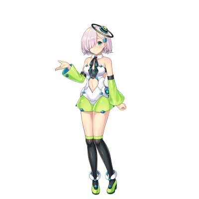

目次
主催者は同じく株式会社パノラプロさん。 共同主催、企画、運営が SVVR Japan さんで開催されました。 以下に大会概要を示します。
2018 年 12 ⽉ 1 ⽇（土）
11:00 開場・⼊場開
11:30
開会式
12:00 開発スタート
19:30 企画発表
21:00
会場閉鎖
2018 年 12 ⽉ 2 ⽇（⽇）
10:00 開場・⼊場開始
17:00
開発終了、成果発表
19:00 審査結果発表、懇親会
20:00
⽚付け開始
スケジュールは千葉大会と大きな違いはないですね。
提出物 1 分 30 秒から 5 分以内の Vtuber コンテンツ
ここも特に変わりないですね。
さて、ではこちらもハッカソン中にあったアクシデントを上げていきましょう！
さて、こちらは記憶がはっきりしていますよ。１０日ほど前ですからね！
前日にＰＣ貸し出しが無いことを知る。 私たちのチームは性能の良いノートＰＣを持っている人が少なかったため、このまま行くと会場で何もできない！
人伝にどうにかノートＰＣを用意した（各方面にはご迷惑おかけしました）。 ノート PC は自分で持っておいたほうが良いですよ！！！（私も持ってなかったんですけどね。）
Entum
さんのスクリプトを使えばモーションキャプチャーできると思っていたが、実際にはうまくできなかった。
https://twitter.com/entum_info/status/986823609329926146
（このツイートのスクリプトです。）
上記のスクリプトを使ってみると動きがとても遅くなった。
アニメーションの速度を 300 倍にして対応した（それでも少し変）。
一部のアニメーションに時間をかけすぎて録画が間に合わなくなった。 みち太郎が樽で吹っ飛ぶシーンに力を入れたら他のシーンを録画する時間が無くなってしまった。
他のシーンを削ったり使いまわすことにした。
発表者と AVIUTIL での動画編集者を同じ人にしてしまったため、発表前に仕事が被ってしまい、スライド確認等の事前練習が出来なかった。
急遽別の人に発表を行ってもらった。
さて、千葉大会の記憶は曖昧だったので、ハッカソン中の動きは書きませんでしたが（書けなかった……）東京大会はハッカソン中の動きを書こうと思います。
11:30 開会式 DMM
さんのイベントスペースで開会式が行われました。
開会式では DMM の Vtuber
の「星名こむ」さんが選手宣誓等をしていました！
DMM の Vtuber 星名こむさん

開会式の後、どの会議室を使うか各々のチームが選んで開始です。 （このチームを選ぶときにですが、 沖縄チームと北海道チームが東京タワーを見れる会議室をめぐってじゃんけんで勝負をして会場が謎の盛り上がりを見せました！ この北と南の戦いを制したのは沖縄チームでした。）
12:00
全 13 チームによるハッカソン開始です。
今回はみち太郎とあんみつおねぇさんはモデルとして登場させることは決まっていたので、話し合ってシナリオを考えました。
13:30
音声素材を声優の方々にお願いをして録音してもらえると言う事で、チームメンバーの一人がスタジオへ向かい、音声素材を録って来てもらいました。
会議室に残ったメンバーは Neuron
を使いモーションを撮り始めました。 16:00
会議場に全員戻り、モーション作成中に気がついたモデルの調整を行い、使用する素材を確定させる。
17:00
モーションを撮る班と企画発表に備える班に分かれて作業をする。
19:30
企画発表開始 この時の進捗は、モーション 65%、ステージ
95%、音声素材 95%、モデル 70%だった。
企画発表会の動画はこちら！ さてさてここで各チームの紹介をしましょう！
以上１３チームです！ ……多い！！！しかも全部強豪！！！
20:30
企画発表会も終わり一時帰宅準備。
荷物をまとめつつ明日朝までに何をするか話し合って解散となりました。
22:00
帰宅したので、自分の範囲を消化する作業。
ここで問題点２が発生する。
10:00
問題点２を解決できないまま会場へ、足取りは重い。
11:00
Unity 側で 300
倍速でアニメーションすると多少のずれはあるものの、大体等倍でのアニメーションとなることが分かり一安心。
12:00
寒空の下コンビニへ行って昼ご飯を食べる。
会場では食べれないため、屋外の椅子で食べた。凍えた。
13:00
時間的に焦り始める。
残りのモーションを撮りつつみち太郎が樽に引かれるアニメーションを作る（問題点３の始まり……）。
15:00
焦る
樽のモーションは終わったが、他のアニメーションを撮影できていない。
また、Unity 側で録画した映像が MP4
形式だったが、用意していた AVIUTIL
では初期で対応していなかったため、MP4 に対応させる
ために時間がかかった。
16:00
動画編集者が発表予定者だった為、動画編集中にスライド作成や発表練習が出来ないことが判明（問題点４発生）。
発表者を急遽変えて対応した。
16:45
17
時までに貸し出されたものを返却する必要があったため、物品返却を開始する。
未だ動画撮影と編集中。 17:00
撮影編集共に終わり企画発表の開始となる。
いよいよ企画発表！ それでは、どうぞ！
こちらが会場の動画です！ https://youtu.be/HOo0UDQ_lfI
クラスター賞
チーム「Cyrium」
ツクモ/ASK 賞
チーム「Freeee」
TASCAM バ美ボ!賞
チーム「ブレンジャー」
Noitom 賞
チーム「アーバンライフ白石」
最優秀賞
チーム「アンリミテッド」
駆け足になってしまいましたが、これにて２大会のハッカソンの紹介を終わります！ 皆さんが興味を持ってこういったイベントに参加をして貰えると嬉しいです！！！ 外部イベントが不安なら、3DayCreating 等に参加してもらえば、経験者からいろいろと教われると思いますので、こちらもよろしくおねがいします！
では、読んでくださった皆様お疲れ様でした！また、ありがとうございました！！！